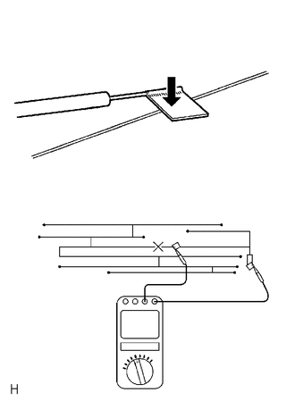

RM3140CG
_56
音频/视频/车载通信系统
_023998
音频/视频系统
_0117393
车窗玻璃天线引线
G
音频/视频系统 车窗玻璃天线引线 车上检查
程序

 1.检查车窗玻璃天线引线
1.检查车窗玻璃天线引线
a.

0.531,0.833 0.604,1.156
false
0.969,1.635 1.042,1.969
false
2.188,1.385 2.271,1.719
false
0.385,0.656 0.833,0.927
0.448,0.271
10
false
*a
0.979,1.979 1.375,2.271
0.396,0.292
10
false
*b
2.208,1.719 2.677,2
0.469,0.281
10
false
*c
| *a | 检测仪探针 |
| *b | 天线引线 |
| *c | 锡箔 |
检查天线的导通性。
- 提示：
-
如图所示，在各天线引线的中部检查其导通性。
- 备注：
- ·
清洁玻璃时，使用柔软干布沿引线方向擦拭玻璃。小心不要损坏引线。不要使用含有研磨成分的去垢剂或玻璃清洁剂。
·如图所示，测量电阻时，用一张锡箔缠绕负极探针的探头，并用手指将锡箔按压到引线上。
- 正常:
天线导通。
如果结果不符合规定，则维修车窗玻璃天线引线。